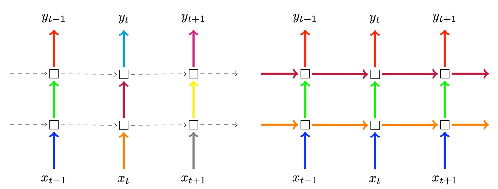

To prevent neural networks from overfitting and increase generalization capacity, several regularization methods are available.
Dropout¶
Dropout is an effective and simple regularization technique introduced by Srivastava et al., 2015. Dropout is only applied during training. The idea is to disable for a given batch individual neurons with some probability (p). Setting (p) to 0 disables the dropout. Default regularization is dropout with (p=0.2).

Tip
Dropout value can be changed dynamically when restarting the training. So it can be adjusted all along the training process.
Dropout is applied on the output of each layer, the output of the attention layer, and can be enabled also between word embeddings and the first layer with the -dropout_input option.
Because of recurrence, applying dropout to recurrent neural networks requires some specific care and two implementations are available and can be configured using the -dropout_type option:
naive(default): implements the approach described in Zaremba et al., 2015. The dropout is only applied on non-recurrent connections.variational: implements the approach described in Gal et al., 2016. In this approach, dropout is also applied to the recurrent connections but each timestep applies the same dropout mask.
The following picture (from Gal et al. paper) describes both different approaches. On the left side, the naive dropout: no dropout on recurrent connections, and dropout for each timestep is different. On the right side, the variational dropout: there is dropout on recurrent connections, but dropout for each timesteps are the same,

Finally, dropout can also be applied to the words themselves. In that case, a set of individual words randomly selected with probability (p_{words}) are replaced by padding tokens. You can apply this option using -dropout_words pwords with a non zero value.